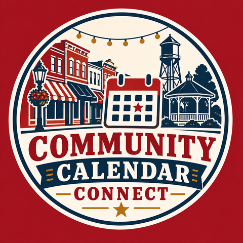

One community at a time
A free calendar with everything happening in your county, all in one place, right on your phone.
Every town has numerous Facebook groups, websites, bulletin boards, and newspapers, and each one only has a piece of what's happening. You'd have to manually check every single one yourself, because hoping it shows up in your feed doesn't work. Nobody has time for that. That's what this is.
Small towns don't lose track of events because nothing's happening. They lose track because nothing's in one place.
Every school, church, city hall, and civic group already posts their own news, just on their own website or their own Facebook page. By the time most people hear about something, it's already over, not because nobody announced it, but because it was announced somewhere they weren't looking.
Community Calendar Connect automatically gathers events from across the county and puts them in one place. Subscribe once, for free, and it shows up right in the calendar already on your phone. Pick just your town, or filter out things like sports or obituaries, so you only see what you actually want. No account, no login, no app to download.
Community meeting, fundraiser, ballgame, garage sale. If it's happening in the county, it belongs on the calendar. Submitting takes about two minutes: no account, no login. A real person checks each one before it goes live, so the calendar stays useful for everyone.
We're starting in Linn County, with the goal of bringing this to every county in Missouri.
If your county or your newspaper doesn't have one yet, get in touch.